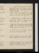
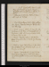
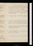
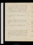
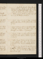
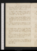
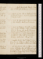
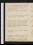

- About
- Diary
- People
- Events
- Reading
- Writing
- Meals
- Meetings
- Search

Jan. 1. 1794. W.Gerald, p. 124, fin.: Cecilia, p. 292; Vol. V, p. 35. Kearsley at tea, talk of genius & virtue; adv. Fenwick.
2. Th.Write p. 21, 22, 23. Moore, Vol. II., p. 60. Tea at Johnson's, w. Poulain & K. Courtney: sup at Holcroft's.
3. F.Moore, p. 460. Call on Robinson; & W. Webb, adv. Nichols.
4. Sa.Moore, p. 560. Dine at Reveley's: call on miss Cooper.
Jan. 5. Su.Moore, p. 616, fin: Johnson's Lives, Vol. II, p. 102. Smith breakfasts: dine at Holcroft's; adv. Smith & Coopers.
6. M.Revise. Johnson, p. 366. Fenwick calls.
7. Tu.Revise. Cecilia, p. 86. Dine at Holcroft's, rev. Philomaths.
8. W.Revise. Breakfast at Ht's & tea at Holcroft's, rev.: call on Inchbald: sup at Jennings's.
9. Th.Revise. Advice to an Author, p. 39: Cecilia, p. 149. Dyson at tea: adv. Fenwick & Marshal.
10. F.Revise. Advice, 59: Cecilia, p. 218. Sup at Reveley's.
11. Sa.Revise. Cecilia, p. 320, fin. Call on Robinson & Holcroft. Pathetic Odes.

Jan. 12. Su.Smith breakfasts: dine at Holcroft's, w. Thelwal, talk of atheism; adv. Stewart.
13. M.Revise. Advice, p. 86: N. A. R., p. 11. Sup at Jennings's, w. Holcroft, Sinclair & Moore, talk of evil.
14. Tu.Revise. Advice, p. 110: N. A. R. p. 27. Tea at Holcroft's: Philomathian supper; visitors Gerald & Pigot.
15. W.Revise. O N. A. R. p. 53. Call on Ritson, nah, & Davis. Tea at Reveley's, w. Holcrofts, Jennings's & Underwood: adv. Sinclair//.
16. Th.Revise. N. A. R., p. 83. Dine at Johnson's, w. Blair, Mackintosh & Courtenay: adv. Stewart & Kenneth C.
17. F.Dine Woolwich, Palmer, w. Holcroft & Grant: call on Reid: sup at Holcrofts.
18. Sa.N. A. R., p. 95, fin. Dine at Thelwal's, w. Agar; adv. Manning & mrs Cline: Medical Societye: sup at miss G.'s, w. miss C.

Jan. 19. Su.Smith breakfasts: Ritson calls: dine at Holcroft's; adv. Ritson, talk of coercion & materialism.
20. M.Revise. Call on Muir, see L. W. Murray: tea at Jennings's, w. Holcrofts, Reveleys, Sinclair, Cook, Folkes, Underwood & miss McKenzie.
21. Tu. Call on B. Hollis: Philomaths, rel. & pol. institution. Hawles, pp. 50. See Priestley.
22. W.Marshal breakfasts: call on Kearsley, Reveley & Gerald: tea at Jennings's; adv. Holcroft, Sinclair & Gerald, talk of trial. Johnson, Vol. III, p. 42: Wyvil to Pitt, pp. 37.
23. Th.Write to Gerald. Savage, p. 65. Fenwick sups calls: sup at Reveley's, a conference.
24. F.Revise. Savage, p. 184, fin. Holcroft calls de Gerald: Marshal & Dyson at tea.
25. Sa.Revise. Advice, p. 153: Thelwal on Vitality, pp. 40: Johnson, p. 278.
Jan. 26. Su.Advice, 178. Smith breakfasts: Masters, J Godwin & Kearsley call: dine at Holcroft's: tea Perry's, w. Holcrofts & Opera Taylor.
27. M.Revise. Inchbald's Romance, ms. Dibbin & Fenwick call.
28. Tu.Stuart & Marshal call. Call on Muir; see Moffat, Lindsay, Evans, Holcroft & Breillat. Pol. Justice, 4 chs. Philomaths, crime.
29. W.Revise. Dine at Jennings's, adv. Holcroft: sup at Reveley's.
30. Th.Inchbald's Romance, fin. Kearsley & Dyson call: Fenwicks at tea.
31. F.Revise: Human Life, 1 1/2 pages. Dibbin at tea.
Feb. 1. Sa.Revise, init. Vol. II. Fenwicks call: call on Inchbald, nah: tea at Johnsons, w. Courtenays & Blairs, talk of Brissot, Mirabeau & jurisprudence.
Feb. 2. Su.Write 1 paragraph. Smith breakfasts, talk of anc. reps: call on Mackintosh & Parr: dine at Holcroft's; adv. Pinard, Stephen & Smith.
3. M.Revise. Dine at Mackintosh's, w. Parr, Tweddel, Losh, Hall, Moore, Robinson, Johnson, & Bell & miss Christie, talk of passions.
4. Tu.Walk ad. Dom. Com.e: call on Perry; see Glenie: dine at Reveley's; adv. Jenningses: Philomaths, crime. see Joice.
5. W.Play, Love's Frailties, w. mes Inchbald, Reveley & Jenningse: sup at Holcroft's, with Stephen. Johnson, Vol. IV, p. 68.
6. Th.Call on Porson; adv. Bankes: & Inchbald: sup at miss Godwin's.
7. F.Revise. Johnson, p. 191. Call on Inchbald; & Holcroft, nah. Thelwal's Lecturee.
8. Sa.Write 1 1/2 pages. Johnson, p. 396. Call on Ritson, nah, & Barry: sup at Reveley's, confession. W. Webb calls, nah.
Feb. 9. Su.Smith breakfasts: Kearsley calls. Dine at H Tooke's, w. Gawler, Vaughan, Bryant, Belmano, Wildman, Jackson & Dyson.
10. M.Johnson, p. 503, fin. Ritson & Joice call; sup at Ritson's.
11. Tu.Trois Imposteurs, p. 65: Life of Wharton, pp. 54. Marshal & miss C. at tea. Philomaths, law.
12. W.Write 2 pages. Advice, p. 214, fin.: Imposteurs, p. 79. Dine at Thelwal's, talk of prudence: sup at Jennings's; adv. Folkes & Dayes, talk of law.
13. Th.Revise. Masters dines; adv. Dibbin. Whar Characteristics, Vol. II, p. 39. Wharton's Works, p. 51.
14. F.Write 2 pages. Imposteurs, p. 100. Hubbard, B. Hollis, Barry & Ritson call: sup at Reveley's, w. Holcroft.
15. Sa.Revise. Characteristics, p. 76: Imposteurs, p. 135, fin. Call on Webb, nah, Kearsley, & Holcroft, nah. see Woodfal junr. Porson calls, nah.
Feb. 16. Su.Smith breakfasts, talk of indolence: call on Mackintosh, adv. Bell & miss C.; & mrs Webb, nah: meet Banks: dine at Holcroft's; adv. Ritson, Dyson & Holme
17. M.Call on Parr; adv. Coke, Halhed, l'évêq[ ] de Troil & Mackintosh: house of lordse. Sup at Mac Reveley's. (Lansdown on peace.)e
18. Tu.Revise. Call on Davis. Philomaths, no-d.
19. W.Revise. Characteristics, p. 98: Hugh Trevor, ms, p. 65. Tea at Johnson's, una Italiana: sup at Holcroft's, w. mrs Jennings.
20. Th.Revise. Trevor, p. 216; Vol. II, p. 212. Sup at Holcroft's, w. Haslets.
21. F.Revise. Brissot, p. 23. Porson dines: sup with him, at Reveley's.
22. Sa.Revise. Brissot, p. 60, fin. Dyson at tea.
Feb. 23. Su.Smith & J Godwin breakfast: Rivers & Dibbin call: tea at Hubbard's. Brissot aux Commettans, p. 24: Characteristics, p. 118. adv. Vincent & Nichol.
24. M. Revise. Call on Inchbald. Brissot, p. 60: Udolpho, p. 114. Robinson calls, nah.
25. Tu.Revise. Call on Ritson. Udolpho, p. 263.
26. W.Revise. Udolpho, p. 325. Robinson calls: dine at Jennings's: sup at Reveley's.
27. Th.Udolpho, p. 723. Stewart calls.
28. F.Revise. Udolpho, p. 760. Ritson calls: dine at Bell's, w. Mackintosh, Porson, dr Hamilton, Sansom, White & miss Christie. call on Gray. Hog's catechism.
Mar. 1. Sa.Revise. Brissot, p. 87. Sup at Reveley's.

Mar. 2. Su.Revise. Smith breakfasts: dine at Holcroft's, il s'irrite sur l'education de ses fillese; adv. Ritson, talk of dr Clarke
3. M.Call at Mackintosh's. Revise: write Valerius to M. C. Brissot, p. 186 .
4. Tu. Sit to Dyson: dine at Thelwal's: Philomaths; legislative power.
5. W.Revise. Brissot, p. 238, fin.: Wakefield. Jo. Godwin calls: call on Wedgwood, nah; & Marshal adv. Hubbard, : tea Johnson's, with Morse & Jon. Scott.
6. Th.Shaftesbury, p. 143: Mallet du Pan, pp. 112: Hooke, p. 140. Call on Reveley & Jennings, nah.
7. F.Characteristics, p. 210: Hooke, p. 247. Call on Holcroft: sup at Reveley's.
8. Sa. Sit to Dyson: sup at Ritson's. Characteristics, p. 258: Hooke, p. 334.

Mar. 9. Su.Smith breakfasts: walk to Wimbledon, w. Porson: dine w. Thomson, Holcroft, Gawler, Thelwal, Pearson, Fletcher, Williams, Joice & Jones.
10. M.Debate on Muire; see Mackintosh, Wilson, Dyer & Perry: dine at Waghorn's, w. Mackintosh: meet T. Thomson & F. Vaughan.
11. Tu.Revise. Dine at Holcroft's; adv. Pinard. Philomaths; legislative power.
12. W.Sit to Dyson: dine at Robinson's, with Chalmers: sup at Jennings, w. Foulkes, talk of law.
13. Th.Revise. History of Brissotins, pp. 68. Dine at Wedgwood's, w. Parsons, dr Smith, Kinsman & Allen; talk of politics & religion: sup at Reveley's, w. Jennings's & Foulkes. See Crosdil.
14. F.Revise. Churchil's Conference & Farewel: Rockm Party . Call on Gawler, A Scott & Bell, nah Inchbald & Porson.
15. Sa.Revise. Hugh Trevor, ms, p. 160. Call on Holcroft: sup at Reveley's, w. Barry & mrs Jennings.
Mar. 16. Su.Smith breakfasts: dine at Holcroft's, w. Thelwal & Pinard; adv. Smith.
17. M.Marshal breakfasts: sit to Dyson: Dibbin & Dyson at tea, talk of gallantry. Trevor, p. 206; Vol. II, p. 44: Thelwal on spies, perfunctorie. J Hollis calls, nah.
18. Tu.Notes on Thelwal. Trevor, p. 155. Call on Inchbald: Philomaths, bloodshed.
19. W.Revise. Holcroft, Hubbard & Ritson call: sup at Reveley's. Hooke, p. 383. w. Holcroft: call on Mackintosh, nah.
20. Th.Norman breakfasts: talk of duties, revolutions & a God. Trevor, p. 216. Tea at Holcroft's: sup at J Hollis's, talk of justice, religion & l. Wycombe.
21. F.Call on Robinson: sit to Dyson, dine: tea miss Godwin's: sup at Jennings, w. Cook.
22. Sa.Hooke, Vol. II, p. 106. Webb calls: Thelwal dines. Thelwal on Fasts.

Mar. 23. Su.Hooke, p. 137: Modrec, p. 70. Smith breakfasts: Johnson calls: dine at Hubbard's, w. Drury; adv. Nugent, Vincent, Sweeting & Cabbel, talk of pracl virtue.
24. M.Revise. Otton calls: call on Kearsley: dine at Jennings's, w. Foulkes: sup at Reveley's. Hooke, p. 192.
25. Tu.Revise. Hooke, p. 264. Holcroft & Dyson call. Philomaths, bloodshed. Execution of Hebert, & 19 otherse
26. W.Sit to Dyson; adv. Ritson. Revise. Hooke, p. 285: Gow, p. 29: Rosciad. Call on Robinson.
27. Th.Revise. Stewart & J Hollis call: dine at B. Hollis's, w. Holcroft, Wakefield, Frend, Northmore, Dyer, Disney & White: call at Johnson's.
28. F.Revise. Call on Radcliffe, Porson & Webb, nah: meet Ritson, Stewart, Wakefield & Frd: Newgate, w. mrs' Reveley & Jennings; see Gerald, Winterbotham & Macarthy. Margt p. 82.
29. Sa.Fawcet dines, talk of God, transcribes for Priestleye. Margarot, p. 186, fin: Tocsin, pp. 58.
Mar. 30. Su.Smith breakfasts: call on Jennings: sit to Dyson: dine at Holcroft's; adv. mrs Jennings & Dyson. Arrest of Dantone
31. M.Northmore calls: call on Inchbald: sup at Reveley's; adv. Jennings's & Foulkes: Otton calls. Crombie on Necessity, ça & la: Night.
April 1. Tu.Write p. 24-28. J Hollis, Barry & Dyson call: dine at Jennings's, w. H. Tooke, Stevenson, Holcroft, Reveleys & Foulkes; adv. Starke.
2. W.Write p. 28, 29/2. Crombie. Holcroft & Kearsley call: dine in Newgate, w. Gerald, Holcroft, Dower, Macarthy, Stevenson, Paterson, Stabler, Jennings, Foulkes, Ridgway, Symonds: adv. Sharpe & adv. Scott, E G.Walker triede
3. Th.Note to Gerald. Candidatee. Dine at J Hollis's, with dr Lister.
4. F.Write p. 29/2, 30. Hooke, p. 378: Gow, p. 51, fin. Dyson at tea, talk of conduct & fine writing, affettuoso.
5. Sa.Write, p. 31-35/2. Hooke, p. 431: Eaton's Trial, pp. 62. Call on Ritson: Radcliffe calls, nah. Execution of Dantone
Apr. 6. Su.Write p. 35/2-41. Smith breakfasts, talk of Latin. Hooke, p. 464: Chevalier, p. 21. Sup at Jennings's, w. Foulkes & Holcroft; adv. Tweddel.
7. M.Write p. 41. Chevalier, p. 64. Call on Gerald & Winterbotham: sup at Reveley's.
8. Tu.Write p. 42-48. Philomaths, connexion of free states & despots. Otton calls.
9. W.Write p. 48-53. Sup at Ritson's.
10. Th.Write p. 53-57. Richard II, act 1: Female Jockey Club, ça & la. J Hollis calls: sup at Holcroft's.
11. F.Write p. 57-63. Bathos, p. 25. Call on Davis: Holcroft// at tea.
12. Sa.Write p. 63-66. Revise{.} Bathos, p. 59, fin.: Scriblerus, p. 51. Dyson at tea.
Apr. 13. Su.Write p. 66-69. Smith breakfasts: dine at Holcroft's.
14. M.Write p. 69-72. Cooper dines: sup at Reveley's. Williams (of Wellsbourn)'s Sermons . Ritson calls.
15. Tu.Write p. 72-275. Joice, Jones, Stanhope, & Holcroft call: J Godwin breakfasts: call on Ritson & Gerald. Philomaths, treaties. Scriblerus, p. 90.
16. W.Write p. 75-81. John Bull, p. 30. Call on Jennings, nah, & Perry.
17. Th.Write p. 81, 82. John Bull, p. 128, fin. Call on Porson, nah, & Holcroft. Kearsley calls, talk of dejection: Dyson at tea, talk of sincerity.
18. F.Write p. 83-86. Richard II, act 2. Cooper dines: Stewart & Dyson call: sup at J Hollis's. Earl Camden dies.
19. Sa.Write p. 86, 87/2. Kearsley calls: call on Inchbald & Jennings: dine at Northmore's, w. Holcroft, B. Hollis, Frend & Dyer: meet Webb.
Apr. 20. Su.Write 1 page. Trevor, Vol. III, p. 100. Dine at Holcroft's, w. Haslets & Cooper; adv. Dyson & Reveleys. Smith breakfasts.
21. M.Write p. 88/2-92. Trevor, p. 100, iterum. J Hollis calls: call on Davis: sup at Thelwal's, w. Birch; Kenyon, Conolly, Pearce. Age of Reason, Paine, p. 20.
22. Tu.Pause. Dine at Fawcet's, talk of Danton. Philomaths, a God.
23. W.Write 1/2 page; interrupted by Holcroft: call on Davis; adv. Radcliffe: tea at Radcliffe's, talk of morals & fortitude: sup at Holcroft's, w. Dyson. Age of Reason, p. 116, fin.: Clarissa, 34 ps. discussion on style.
24. Th. Write p. 92-97. Letter to M. P., p. 52: miss Williams, Vol. I, p. 161: Clarissa, 73 pages. Call on Joice & Reveley, nah.
25. F.Write p. 97-101/2. Letter M. P., p. 132. Call on mrs Cooper: tea at Johnson's, talk of property & national education.
26. Sa.Write 101/2-104. Letter to M P. p. 152, fin: Clarissa, p. 112 ps: miss Williams's, p. 223, fin. Play, the Distressed Mothere.
Apr. 27. Su.Write p. 104, 105, 106/2. Smith breakfasts: dine at Holcroft's, w. Pinard & Cole: call on Wedgwood, Perry, Inchbald & Mackintosh, nah.
28. M.Write p. 106/2-111. Hooke, Vol. III, p. 24: Richard II, act 5. Call on Reveley & Ritson, nah: sup at miss Godwin's.
29. Tu.Write p. 111. Hooke, p. 66. Sit to Kearsley: dine at Reveley's: call on Gerald; see Macarthy, D'Esparre junr, Oneil & Fitzroy. Philomaths, a God.
30. W.Write p. 112-117/2, fin. Clarissa, 42 pages. Hooke, p. 90. Call on Barry, nah: see Nicholson: sup at Thelwal's, w. Holcrofts; see Agar, Richter
May. 1. Th.Revise: call on Holcroft. Hooke, p. 112. Sup at J Hollis's, talk of Gerald.
2. F.Call on Holcroft: sit to Kearsley: call on Radcliffe, nah: sup at Reveley's. Hooke, p. 180.
3. Sa.Call on Holcroft: sit to Kearsley: dine at Holcroft's: call on Jennings, nah.
May 4. Su.Write 1 1/2 pages. Smith breakfasts: dine at Holcroft's, w. Thelwal & Cole; adv. Ritson, Dyson & Stephen, talk of Richard, & bloodshd.
5. M.Write 2 pages. Lettres Persanes, p. 52: Trevor, p. 130. Call on Holcroft: sit to Kearsley, adv. Robinson: sup at Reveley's.
6. Tu.Write 4 pages. Timon, acts 1, 2, 3. Call on Davis, Fenwick & Gerald. Philomaths, theatres.
7. W.Write 1 page: revise. Timon, act 4: Reynolds, Discourse I. Ritson calls: sup at Holcrs.
9. Th.eWrite 1 page: revise. Trevor, p. 148. Call on Ritson & Holcroft: dine at Reveley's: play, the Jewe.
9. F.Revise. Sit to Kearsley. Williams, Vol. I.
10. Sa.Revise. Call on Robinson, Porson & Holcrt. Exhibitione. Dyson at tea: sup at Jennings's, w. Howard, Aris & Foulkes.
May 11. Su.Smith breakfasts: call on Holcroft: dine at H Tooke's, w. Tooke, Sharp, Banks, Thelwal, Richters, Scott, Stock, Joice & Dyson: talk w. H R. of Cant, &c.
12. M.Call on Davis: sit to Kearsley; adv. Holcroft: tea at Holcroft's; adv. Porson; sup at Reveley's.
13. Tu.Williams, Vol. II. Exhibition, w. Dysone: tea Fenwick's: Philomaths, prostitutes v. parsons. Dumourier, 50 pp.
14. W.Reynolds, Discourse 2 & 3. Meet Radcliffe's: Porson dines
15. Th.Sit to Kearsley: dine at Holcroft's: call on mrs Thelwal: Mackintosh calls: J Hollis & Barry call, nah.
16. F. Williams, Vol. III: Paine to the Addressers, pp. 78. Call on Ritson: tea Johnson's: Dyson calls.
17. Sa.Call on Robinson, Holcroft, & mrs Inchbald nah: house of commons, suspension of h. ce.
May 18. Su.Smith & J G breakfast: H Richter calls, talk of Cant: dine at Holcroft's; adv. mrs Thelwal: call with him on H Tooke; adv. Wildman & Vaughan.
19. M.Call on Northmore: meet B Hollis: sit to Kearsley; adv. Holcroft: mrs Jennings calls: call on Radcliffe, nah: tea J Hollis's; adv. Lister.
20. Tu.Robinson calls: sit to Kearsley; adv. mrs Reveley: dine at J Hollis's, w. Lister; adv. Holcroft: Philomaths, a God. Wakefield v. Paine, pp. 58.
21. W.Call on Robinson, Ritson, Holcroft & Inchbald: dine at Jennings's; Newgate w. ml supper; Cook. Gerald's Defence, pp. 57.
22. Th.Dine at Fawcet's, w. Holcroft: sup at miss Godwin's, w. Holcroft, Rumps, mrs Fremow, & mrs Cook.
23. F.Call on Robinson, Ritson, Radcliffe & Inchbald: Greenwood's; adv. Shield: dine at B. Hollis's; adv. Jennings: sup at Reveley's; adv. Woodford. Kearsley & Dyson call.
24. Sa.Udolpho, V. IV, pp. 428: Life of Smollet, pp. 30: Regicide, act 1.
May 25. Su.Smith breakfasts: Walker & Dyson call: call on Inchbald, adv. Holcroft: meet Bosville: call on Sharp with Holcroft: Vaughan au souper.
26. M.Regicide, acts 2, 3, 4: Trevor, p. 140. Sit to Kearsley: Masters at tea: sup at Reveley's. Publication
27. Tu.Regi Write 1 page, P. J. Regicide, act 5: Farce by Smollet: Trevor, p. 250. Marshal breakfasts. Philomaths, theatres.
28. W.Reynolds, Discourse 4 & 5: Trevor, Vol. II, p. 208. Sit to Kearsley: Dyson at tea.
29. Th.Trevor, Vol. III, p. 50. Call on Webb & Inchbald: dine at Holcroft's: call on Johnson, nah: Ritson au soir.
30. F.Trevor, p. 249, fin. Call on Gerald, with Ritson; adv. Macarthy: sup at Ritson's; mrs Elliot.
31. Sa.Thelwal on Prosecutions, pp. 30 Calonn'es, w. Dyson, Reveleys, mrs Jennings & mrs West: Dyson dines: Vauxhal w. Dyson & White.
June 1. Su.Smith breakfasts, talk of exertion: Dyson, White & Walker call: dine at Holcroft's; adv. Ritson.
2. M.Bryan's, with Holcroft//; adv. W Smith: sup at Reveley's, talk of elocution. Reynolds, Discourse 6.
3. Tu.Hastings's trial, Burkee. Reynolds, Disc. 7: Lettres Persanes, p. 96. Philomaths, marriage.
4. W.Write 4 pages. Persannes, p. 152. Miss Cooper & Stewart call: sup at Jennings's, w. mrs Fonsaick.
5. Th.Persanes, p. 240. Call on Inchbald; adv. Dechaire: meet Kearsley: sup at miss G's.
6. F.Write one page: note from Jno Robinson. Ritson, Webb, Nichols, Dennis & mrs Fenwick call. Hooke, p. 256: Persanes, p. 268: Mallet du Pan (1794), pp. 80.
7. Sa.Write 2 pages. Burke's Reflections, p. 50: Hooke, p. 294: Persanes, p. 319: Hume on Populousness, p. 32. Barry & Kearsley call: call on Fenwick.
June 8. Su.Smith breakfasts: Holcroft// calls. Hume, p. 66, fin.: Burke, p. 78. Call on Mackintosh, see Wild, walk w. M.: dine at Holcroft's; adv. Ritson, Stewart & Chatfield.
9. M.Write 4 pages. Burke, p. 136. Cooper dines; sup at Reveley's, elocution.
10. Tu.Write 1 page. Burke, p. 164. Calonne's, w. Holcrofts: dine at Holcroft's, w. Cooper; talk of taste.
11. W.Write 1 1/2 pages. Call on Inchbald, talk of Holcroft: meet Merry, dine w. him at Holcroft's; evg Stephen & Jenningss.
12. Th.Burke, p. 182: Gerald, 51 pp. Marshal & Holcroft call: call on Richter & Gerald; see mrs G.
13. F.Write 2 pages. Burke, p. 224: Persanes, p. 365. Ritson calls: dine at Jennings's, w. Holcroft & mrs Reveley; adv. Vaughan & Foulkes.
14. Sa.Write 1/2 page. Burke, p. 242: Persanes, p. 460 420, fin. Webb & Ferguson call: J. & Jo. Godwin dine: sup at Nicholson's, talk of promises & sincerity.
June 15. Su.Smith breakfasts: Walker calls: Foundling Hospitale: dine at Holcroft's, w. Merry. Judicial Astrology, act 1.
16. M.Burke on the Sublime, p. 44. Call on mrs Reveley: dine at Fawcet's, talk of sympathy: sup at miss G's.
17. Tu.Write 2 pages. Burke, Sublime, p. 60: do, Reflexions, p. 263: J. Astrology, acts 2, 3. Nichols calls: sup at Reveley's, w. mrs Jennings.
18. W.Write 2 pages. Burke, Reflexions, p. 364, fin.: Sublime, p. 80. Call on Johnson, nah.
19. Th.Write 3 pages. Burke, p. 192. Meet Raine & Johnson: call on Inchbald: mes Reveley & Jennings at tea: sup at Jennings's. w. Reveleys.
20. F.Call on Robinson, Fenwick, Dennis, Spilsbury, mrs Cooper & Ritson. Burke, p. 244: Knights's Landscape, Book 1 & 2.
21. Sa.Call on Dorset, Barry & mrs Webb nah: sup at Reveley's: tea Fenwick's, w. miss Braddock. Burke, p. 261.
June 22. Su.Smith breakfasts: Reveley's Tour: dine at Holcroft's; adv. Reveleys & Jenningss.
23. M.Burke, p. 302. Call on Webb nah, & Nicol: Marshal dines: mail to Ipswich, talk of Warley camp.[Not in London]
24. Tu.Walk to Stowmarkete: Norman's, talk of God, industry, drinking & swearing.[Not in London]
25. W. Chaise w. Norman, 12 miles: walk 15e: dine at Long Shatton: stage to Norwich: walk for Bracon Ash, meet T. Harwood, chaise w. him to Bazeley junr 3 miles.[Not in London]
26. Th.Faublas, p. 92: Fabre d'Eglantine. Dr Alderson calls. Talk of regulation. Morning walk, seul: Merry's Ode.[Not in London]
27. F.Faublas, p. 161: First Report secrecye. March's, see Alderson, Rigby, Newton, &c, talk of associations. Call on mrs Sothren.[Not in London]
28. Sa.IId Report, p. 33. Call on Sothren, 2 Barnards & J Taylor: dine at Alderson's, w. B. Gurney, Martin, Taylor s., Marsh, Firth, dr Smith & Merry; adv. J. Taylor, Pitchford & mr & miss Smiths.[Not in London]
June 29. Su.IId Report, p. 72 fin.: Faublas, p. 182. At Dinner, Rigby, Pitchford, Marsh, Bruntons & A. Alderson, talk of the punishment of kings.[Not in London]
July 1. Tu. Tea at Alderson's, w. Merry: supper W. Taylor, talk of property: sleep[Not in London]
2. W.Read T. Gracchus: meet Newton & Merry: dine at Barnard's, w. Gurney, W. Taylor, S. & W. Barnard & Watson; talk of establishments & gratitude: Horsford w. Gurneys.[Not in London]
3. Th.Dalling. Call on T. Harwood, & Sykes nah. Hull Godwin & wife dine.[Not in London]
4. F.Dine at Copland's, w. mother; talk of Christianity.[Not in London]
5. Sa.Breakfast at Sothren's, w. brothers: see B. Sewel & Merry: March's, Copland, &c: dine at Jno Gurney's, w. Jos., Enfield & dr Smith, talk of justice; adv. Smiths, Norgates & Beloe: sup at Alderson's, w. Pitchford, J Taylor, Firth, S & T Barnard.[Not in London]
July 6. Su.Call on J Taylor, miss Parr, mrs Barrow & Sothren: dine at Alderson's: mail w. Morphew, talk of revolutions.[Not in London]
7. M.Dine at Holcroft's: call on Jennings & Reveley, nah.
8. Tu.Amitié Trompée, 66 pages. Call on Ritson.
9. W.Hume on Tragedy, 10 pp.: Dryden's Ovid, 12 pages: Burke, p. 342, fin. A. T., Vol. II, p. 58. Tea Barbauld's.
10. Th.Hume, Standard of Taste, 24 pp. Call on Porson, walk: Dyson at tea.
11. F.Hume, Phil. Sects, p. 12. Call on Inchbald & Frend, nah, Gray & mrs Jennings; adv. Hewardine & mrs Cox: sup at Reveley's, w. Jennings's & Holcroft. Prorogation: ministe
12. Sa.Call on Gerald, w. Jennings's; adv. Sinclair & Dower: sup at J's, w. White satyric.
July 13. Su.Write 4 pages. Call on Mackintosh, nah: meet Wild: dine at Holcroft's, w. Sterling; adv. Merry & Dyson.
14. M.Write 3 pages. Rambler, 9 Nos. Call on Inchbald: sup at Reveley's. Dyson calls.
15. Tu.Call on Robinson, Merry nah, mrs Thelwal & mrs Jennings: dine w. Philomaths: sup at Jennings's, w. Reveley's, Holcroft & Sinclair.
16. W.Dine in Newgate, w. Gerald, Sinclair, Jennings's & miss Aris; see Barrow, Hodgson, &c: sup at Jennings's, w. Macnamara.
17. Th.Rambler, No 18. Ritson calls, talk of Botany Bay: sup at Fenwick's, talk of perfectibility.
18. F.Rambler, No 24: Dryden's Ovid, 12 pages. Call on mrs Reveley: Marshal dines: sup w. him at miss G's.
19. Sa.Smith's Moral Sentiments, p. 60. Call on mrs Jardine & mrs Reveley: dine at Jennings's, w. Macnamara; tea Holcrofts, Reveleys, Cook, Delaval & miss Aris.
July 20. Su.Smith, p. 84: Tooke's Trial, pp. 84. Dine at Holcroft's; walk w. Blake; adv. Ritson.
21. M.Write 1/2 page. Walk w. Dyson to Lee Bridge: dine at Fawcet's, w. mrs Smith: sup at Reveley's, w. mrs Jennings & Watts's. Virgil, Lib. VII, vs. 211.
22. Tu.Write 2 1/2 pages. Smith, p. 140: Virgil, vs322: Rambler, No 30. Sup at Nicholson's, talk of passions: call on Barry: meet Johnson.
23. W.Call on Robinson, Lister, Davis & Holcrt: Fawcet calls: dine at Marshal's; tea w. him at Hubbard's.
24. Th.Virgil, vs. 460: Scotish Songs, ça & la: Wakefield to York, pp. 33. Call on Holcrt, Marshal & Ritson.
25. F.Virgil, vs. 622: Lequinio, p. 13. Dine at Reveleys; adv. Banks's & Watts's: call on Inchbald.
26. Sa.Virgil, vs. 743: Smith, p. 244: Scotish Songs, ça & la. Stewart calls.
July 27. Su.Smith & J G breakfast: T Fenwick, Webb & Ferguson call: call on Jennings nah & Inchbald. Write 2 pages. Virgil, vs. 817: Smith, p. 355.
28. M.Write 2 1/2 pages: Virgil, Lib. VIII, vs. 275: Smith, p. 412. Sup at Reveley's, w. Barry.
29. Tu.Virgil, vs. 420: Smith, p. 551, fin. Tea Johnson's, w. K. Courtenay; see Courtenay & Steevens.
30. W.Write 1 page, Virgil, vs. 731: Montesq. sur le Gout, pp. 46. Dine at Reveley's; call on Gerald, w. mesReveley & Jennings; adv. Hart Street, miss Ramsay & Cook.
31. Th.Virgil, Lib. IX, vs. 280. Dine at Fawcet's: Richters call: sup at Holcroft's, w. Porson, Jennings's, mrs Reveley & mrs Luneham.
Aug. 1. F.Virgil, vs. 458. Call on Lister nah, & Ritson: Sup at Fenwick's.
2. Sa.Virgil, vs. 529. Reveley calls: Dyson at tea: sup at miss Godwin's.
July 3. Su. eVirgil, vs. 597. Smith breakfasts: Ritson & Adams call: dine at Holcroft's; adv. Salomon. P. of S., act 1.
4. M.Virgil, vs. 735. Write for Reveley. Marshal dines: mrs Fenwick at tea: sup at Jennings's, w. Reveleys, Aris's, miss Ramsay, Whitehead & Macnamara.
5. Tu.Darwin, p. 13. Reveley calls: dine at do's: sup w. them at Holcroft's, talk of mimicry & Pan. Fevere.
6. W.Fevere. Darwin, p. 41: Sicilian Romce, p. 100. Hubbard, Reveley & Dyson call.
7. Th.Sicilian Romance, p. 239. Dine at Jennings's, w. Sinclair.
8. F.Call on Robinson & Porson, nah, & mrs Thelwal: Grecian, Symonds, & Kearsley: meet Taylor & Ritson: dine at Marshal's. Sicilian Romance, Vol. p. 216, fin.: Ghost, B. I.
9. Sa.Ghost, Books II, III, IV/2. Astley's: Play, How to be Happy,e: sup at Holcroft's.
Aug. 10. Su.Ghost, B. IV/2. Smith breakfasts: dine at Holcroft's, double corr.; adv. Ritson & Shepperson.
11. M.Virgil, vs. 818; X, vs. 117. Dyson dines: call w. him at Reveley's, nah: sup at Nicholson's.
12. Tu.Virgil, vs. 214. Dine at Henley's: tea Otton's: call on Gerald: sup at Adams's.
13. W.Dryden's Ovid, 20 pp.: Lequinio, p. 30. Call on Hubbard; meet Merry: dine at Reveley's.
14. Th.Call on Robinson, Lister & Holcroft: M. dines; adv. mrs C.: sup at Fenwick's.
15. F.Indian Queen. Sit to Kearsley: dine at Hubbard's, w. M.Porson calls, nah. On Dramatic Poesy, p. 38.
16. Sa.Call on Robinson & Taylor: sit to Kearsley: M. dines: walk in the Towere: sup at miss Godwin's, w. M.
Aug. 17. Su.Virgil, vs. 263. Smith breakfasts: Dennis & Ritson call: dine at Holcroft's, w. Merry & Porson, talk of prayer.
18. M.Virgil, vs. 374. Sit to Kearsley; adv. Holcroft: dine at M's: Charing cross: sup at Reveley's, w. Banks's & Jennings's.
19. Tu.Write 3 1/2 pages. Virgil, vs. 605: Indian Emperor, acts 1, 2, 3, 4. Dyson & White call
20. W.Write 1 page. Virgil, vs. 840. Fawcet dines: miss Alderson calls, nah.
21. Th.Write 1 page: revise. Virgil, vs. 908; XI, vs. 181: Dram. Poesy, p. 50.
22. F.Write 3 pages. Virgil, vs. 444: Dram. Poesy, p. 61. J G calls: Barbauld calls, nah: call on Barry.
23. Sa.Write 2 1/2 pages. Virgil, vs. 683. Stewart calls: call on Gerald; adv. Macarthy & Sinclair: sup at Jennings's, w. Holcroft, talk of Robespierre.
Aug. 24. Su.Write 2 pages. Virgil, vs. 771. Smith breakfasts: dine at Holcroft's; talk of nuns: sup w. him at Gray's; talk of Robe, adv. Gordon, Gillies, Hay & Brown.
25. M.Write 4 pages. Virgil, vs. 915; XII, 106: Henry 4, I, acts 1, 2, 3.
26. Tu.Write 2 1/2 pages. Virgil, vs. 382: Prophecy of Famine: Dram. Poesy, p. 71. Tea at Reveley's, w. Lowry & Baker; adv. Holcroft. Finish Henry 4, I. Miss A. & Boddington call. Stewart & Ritson call.
27. W.Virgil, vs. 696. Call on D'Esparre, w. Sinclair: dine at Jennings's: sup at Adams's. adv. Zenobio.
28. Th.Write 3 pages. Virgil, vs. 952: I, vs. 123. Call on Inchbald & mrs Jardine: dine at Jennings's, w. Ferguson; adv. Sinclair; talk of self love & Mandeville. D. P., p. 82, fin.
29. F.Virgil, vs. 616: Mandeville, p. 92. Call on Fawcet, nah: dine at the Mermaid, Hackny.
30. Sa.Write 2 pages. Virgil, vs. 756; II, vs. 434: Lucan, 182: Mandeville, p 137: Henry 4., II.
Aug. 31. Su. Virgil, vs. 600: Lucan, 300. Smith breakfasts: Dyson & White call; talk of commerce: dine at Holcrofts'; adv. H Richter & Pinard. Mandeville, p. 158.
Sep. 1. M.Virgil, vs. 804; III, 358: Lucan, 472: Mandeville, p. 190: Henry 5, acts 1, 2, 3. Sup at Reveley's, w. Jennings's.
2. Tu.Write 1 page. Virgil, 718: Lucan, 598: Mandeville, p. 220: Henry 5, act 4. Call on Ritson: sup at Philomaths.
3. W.Write 1 page. Virgil, IV, 300: Henry 5, fin. Marshal breakfasts: call on Davis: tea Jennings's; adv. Macnamara.
4. Th.Write 3 pages. Virgil, 705: Dumourier, pref., pp. 32. Dyson dines; talk of manual labour & desire: sup at Fenwick's.
5. F.Write 6 pages. Virgil, IV: K John, acts 1 and 2: Dumourier, p. 47. Sup at Reveley's.
6. Sa.Write 5 pages. Virgil, V, 285: Mandeville, p. 270: K. John, acts 3 & 4: Dumourier, p. 75. Call on Ritson, w. Stewart, 20.
Sep. 7. M.eWrite 2 pages, Virgil, 603. Smith breakfasts: dine at Holcroft's, w. Porson; adv. Ritson & Richter; talk of Sydney & q. of Scots.
8. M.Virgil, 871: Mandeville, p. 328. Sup at Reveley's, w. Lowry; talk of self love.
9. Tu.Virgil, VI, 407: Mandeville, p. 364: K. John, act 5: Dumourier, p. 148. Philomaths, tribunes.
10. W.Write 3 pages. Virgil, 678. Dine at Reveley's: call on Gerald: sup at Jennings's; adv. miss Mackenzie.
11. Th.Write 3 pages. Virgil, 901: Mandeville, Vol. II, p. 34. Tea at Johnson's w. Courtenay.
12. F.Revise. Virgil, V. Call on d'Esparre; adv. Sinclair, Brown, Zenobio & Barney: sup w. S. at Jennings's: call on Davis.
13. Sa.Revise. Dumourier, pt II, p. 81. Call on Inchbald; adv. S. C. Bunbury: Dyson at tea.
Sep. 14. Su.Revise. Virgil, VI, 280: Mandeville, p. 48: Dumourier, p. 143. Smith breakfasts: call on Ritson: sup at Nicholson's; talk of optimism
15. M.Revise. Virgil, 732: Mandeville, p. 75: Dumourier, p. 200. Play; Prelude & 1/2 Suspicious Husbande: sup at miss Godwin's.
16. Tu.Dine at Morgan's, w. Battie, Boddington & Amelia; adv. Ives Hurry & Walters; talk of God & Burke. Sleep at Southgate. Fawcet calls, nah.[Not in London]
17. W.Dine at Holcroft's: tea Hazlit's, w. H's, Hunters, Williams's & mrs Thelwal, Hazlit junr & Swannick.
18. Th.Diarrheoeae. Dumourier, p. 238, fin. Dyson at tea: sup at Jennings's, w. Reveleys; adv. Macnamara.
19. F.Diare. Virgil, 901: Hume on evil, pp. 39: Hamlet, acts 1 & 2. Ritson calls.
20. Sa.Virgil, VII, 116: Mandeville, p. 125: Hume on Morals, p. 202-208: Hamlet, act 3: Christie, pp. 115. Tea Powel's.
Sep. 21. Su.Virgil, 240: Mandeville: Hamlet, act 4. Smith breakfasts: dine at Holcroft's; adv. Ritson, & miss Cooper & miss Watts.
22. M.Virgil, 474: Hamlet, fin.: Candide, p. 115. Miss Cooper dines: sup at Nicholson's, talk of optimism.
23. Tu.Virgil, 700: Mandeville, p. 142: Macbeth, act 1: Candide, p. 294, fin. Philomaths, suicide.
24. W.Write 2 pages. Virgil, 817; VIII, 159: V. Lettres Phil., p. 27. Hubbard calls: call on Jennings: dine at Northmore's, w. Wolcot, Lutwich, Taylor & Holcroft.
25. Th.Hartley, 29 pages: Virgil, 456: Voltaire, Romans, p. 71. Sup at Jennings's.
26. F.Write 2 1/2 pages. Virgil, 731: Voltaire, p. 126. Powel at tea; adv. Dyson: Stewart calls.
27. Sa.Write 3 pages. Virgil, IX, 212: Voltaire, p. 182. Ritson & Porson call: call on Gerald: sup at Fenwick's.
Sep. 28. Su.Revise. Virgil, 458: Astrology, act 1. Din Smith breakfasts: dine at Holcroft's; adv. Dyson.
29. M.Write 1 page. Virgil, 671: Voltaire, p. 226; Jenni, p. 34. Call on mrs Reveley L S.,
30. Tu.Virgil, 818: Jenni, p. 85, fin. Eaton's; adv. mrs Griffith: dine at Gerald's; adv. Macdonard, I. Hurry, miss Alderson & Sinclair. Philomaths, utility of religion; Iliff.
Oct. 1. W.Virgil, X, 144 (interr. by a sums from Ht): Goudman, pp. 34. Call on Porson, nah: Dyson at tea; talk of etymology.
2. Th.Write 1 page. Virgil, 400: Voltaire, II, 85. Dine at Jennings's, w. Foulkes & mrs Reveley: call on Sharp; adv. Holcroft.
3. F.Voltaire, p. 106. Call on Inchbald & Ritson: dine at Hubbard's; adv. Iliffs.
4. Sa.Virgil, 580: Voltaire, 156. Call on Gerrald: tea Powel, w. Roberts & Walker.
Oct. 5. Su.Virgil, 718. Smith breakfasts: dine at Holcroft's, w. Porson; adv. Ritson. Coventry stage; sup at { }[Not in London]
6. M.Breakfast at Stony Stratford: walk from Coventry: dine at Kennelworth. Sup at Hatton; Parrs, Heming, Philips & Hall; altercation de me de coenâ dom.e[Not in London]
7. Tu.Story of the oaks by mee: talk of monarchy, self love & family affection: Marcand arrives.[Not in London]
8. W.Treatise of Hum. Nature, p. 31. Letter fm Holcroft. Dine at Bird's, w. Johnsons, Dalrymple & Gregory.[Not in London]
9. Th.Dine at Johnson's, w. do; adv. B. Craven; evg, talk of duelling, necessity, &c: sleep.[Not in London]
10. F.Dine at Coventry, w. Heming, Hall & Ca. Parr: tea at Johnson's, w. gen. Powel, ma. Willey & Gregory: sleep.[Not in London]
11. Sa.Call at Mawleys: dine at Williams's; talk of culprits & passions; Parr admits that reasoning always precedes volition, &e: sleep.[Not in London]
Oct. 12. Su. Call on l. Dormer: churche: dinner dr Lambe; adv. miss Wilson: explication avec mee.[Not in London]
13. M. Walk to Hockley, 7 miles: coach to Oxford; Nott of Stratford, & Wise student : call on dr White, nah: coach, mail.[Not in London]
14. Tu.Call at Holcroft's & Jennings's: dine at M's: Newgate: sup at Nicholson's.
15. W.Merry & Northmore call: call on Gray, New & at Ht's: dine at Jennings's, w. Ferguson: tea Foulkes's, w. Hts.
16. Th.Call on Ritson; & Robinson, nah: dine at Hubbard's; adv. M.: Newgate; Nicholson & Lovel: sup at Fenwick's.
17. F.Read w. Ritson: dine at Nicholson's: tea Foulkes's, w. Gurney. Write 8 pages.
18. Sa.Write 14 pages. Dyson & M. dine.
Oct. 19. Su.Write 2 pages: correct. Smith bs: Dyson, White, Franks & Lister call: dine at Northmore's, w. Ledwich & three professors from Caen.
20. M.Call on at Newgate, w. Northmore; adv. J Aickin: dine at Ms: walk to Reveley's, nah: sup at Foulkes's.
21. Tu.Dine at M's: Philomaths: sup w. Agar, Powel & Hubbard. Newgate. Kearsley's, Publication.
22. W.App., 6 pages: call on Inchbald (adv. Robinson), Gray, Watts, Hts & S mrs Shd: Newgate: sup at Jennings's, adv. Foulkes.
23. Th.Call on Gray, Jennings & Foulkes: dine at Nicholson's: tea mrs Shield: play, the Ragee: sup at Jennings's, w. Ferguson, Reveleys, mrs Tomkins & miss Lloyd.
24. F.M. breakfasts: call on Foulkes, Perry, T? Symonds & Dyson: dine at miss G's: Newgate; Dyer & Brown: sup at Hubbard's. see H Richter.
25. Sa.Call on Sharp, Newgate, Compter & Agar: dine at Ms: sup at Foulkes's; demêlé de ml.
Oct. 26. Su.Smiths bs: Moore, Dennis & Ritson call: dine at Jennings's, adv. miss Ramsay & Reveleys: call on Gray, adv. Jenkins, Gillies, & Robinson s.
Nov. 1. Sa.Hardy's triale: see Wharton , Thomson, Walker, Roberts M., Vaughan, Harwood, Frost, Williams, Banks, Sharp, Ferguson, Symonds, Towers, C. Moore, G. Moore, Hawes, Ritson, Gray, Webb, Belmano, Macdonald Cursory Strictures—To this pamphlet Mr H. T. frequently declared that he was indebted for his life. One day, in mixed company, having insisted that the author should tell him without circumlocution whether it were of his writing or no, & been answered in the affirmative, he called the author to him, & taking his hand, conveyed it suddenly to his lips, vowing that he could do no less by the hand which had given existence to that production. (May 21, 1795.) Jan. 29, 1809.
Nov. 2. Su.Dine at Robinson's, w. Moore's & Inchbald: sup at Jennings's, with Griffiths.
3. M.Sup at Jennings's, w. mrs Reveley, Ferguson, Moore & Symonds.
5. W.Hardy's acquittale.Call on Holcroft: sup at Perry's, w. Bankes, Robinson, Gillies, Barnes, & Armstrong & Agar; adv. Burney.
6. Th.Call on Jennings: dine at Foulkes's, w. Gurney, Hutchinson & Jennings; adv. Jamieson .
7. F.Miss Cooper cal breakfasts: Dyson calls: sup at Holcroft's, w. H Richter.
8. Sa.Call on Northmore, nah; & Inchbald: dine at M's: call on Gerald & Holcroft; adv. Nicholson & H Richter: sup at Nicholson's.
Nov. 9. Su.Smith breakfasts; Moore calls, & Cooper: dine at Foulkes's.
10. M.Fawcet dines: Dyson at tea.
11. Tu.Call on Inchbald, Holcrofts & Gray: Cooper dines: Philomaths, sexes.
12. W.Dine at Jennings's: call, w. Ml, on Gerald (adv. Scott & Naylors) & Holcroft.
13. Th.J Hollis & col. Barry call; call on Robinson & Ritson: dine at Foulkes's, with Vaughan, Ward & Robinson Irish barrister; adv. Chawners.
14. F. Call on Barry: dine at Northmore's, w. Frend, Disney, B. Hollis & Ledwich.
15. Sa.Newgate; Holcroft, Tooke, Thelwal, Kyd, Richter, Joyce, Bosville, Frost & col. Miles: see J Taylor: call on miss Hayes: dine at Listers, w. Crisp & J Hollis; talk of passions, God & self love.

Nov. 16. Su.Smith & Cooper breakfast: call on Gray & Ritson: dine at Foulkes's, adv. Powel & mrs Hanson{,} miss Hurst: sup at Jennings's, w. Brent & Cook.
18. Tu.Philomaths, incest.
19. W.Call on Gerald; adv. Jennings's & mrs Reveley.
21. F.Sup at Jennings's, w. G. Moore, Scott & mrs Reveley.
22. Sa.Tooke's acquittale.Tooke's triale: see Courtenay, Geddes, Stephens, Bush, Marsh, Sharpe Gram., miss Alderson, Robinson{,} I B, Ward, Lushington, White, Woodhouse, Adams{,} Times, W Barnard, Mackintosh, Pearson, Gawler
Nov. 23. Su.Smith breakfasts; adv. Walker & Moore: call on Gray & Jennings: dine at Foulkes, w. mrs Thelwal. Newgate, the prisoners & Perry patissier.
24. M.//Call on Mackintosh: Wi see Courtenay: Wimbledon, w. Foulkes.
25. Tu.Call on Parr; adv. Street, G Moore, Tweddel & Losh; 4 to Gerald: call on Symonds, Sharp, Frost & Jennings. Philomaths, fame
26. W.Call on Parr (adv. Tweddel & Maurice) & Holcroft: Barry & Cartwright call: dine at Mackintosh's, w. Parr, Tweddel, Street & Marcand; adv. Bartlam & G Moore.
27. Th.Call on Blake, col. Barry nah, Webb, Hollis & Nichols: dine at M's: sup at Shield's, w. Crosdil; adv. Collick & Smith.
28. F.Dine at Gerald's, w. Crompton, Taylor Lanc., Sinclair, Brown & Scott: sup at Jennings's.
29. Sa.Newgate: Webb, Nichols & mrs Jardine call: dine at Crompton's, w. Taylor, Brown & Scott.
Nov. 30. Su.Smith breakfasts: J G calls: call on mrs Jardine, write: dine at Foulkes's, w. Frost; adv. Powel & Agar.
Dec. 1. M.Dine at Perry's: Holcrofts, &c. dischargede: sup at Holcroft's.
2. Tu.Play, Roman Father, & Wedding Daye; adv. Brunton & K Courtenay. Read H's Defence, pp. 92. Sup at Foulkes's, w. David F.
3. W.Sup at Holcroft's; adv. mrs Jardine. Sup at Jennings's.
4. Th.Read H's Defence, pp. 92: Dine at Fenwick's: sup at H's; adv. Mrs Jardine.
5. F.Thelwal's acquittal. Dine at Foulkes's, w. Thelwal's, Holcroft, Powel & Manning: adv. Hazlits, Williams artist, do L. F, Pearce, Hardy, Chennels & mrs Holt: Rotherld, Busby, T. Cooper
6. Sa.Call on Crompton, nah, & Inchbald ; adv. Twiss: Dyson, M. &C. dine. Thelwal's trial: see mrs Knowles & Montague: Lawrence drawsee
Dec. 7. Su.Smith breakfasts: Walker & Hayes call: dine at Holcroft's, w. Thelwals, Foulkes's, Porson & mrs Lunan; adv. Dyson & Ritson.
8. M.M. breakfasts & dines: call on Davis: sup at Reveley's; adv. Lowry: meet Ledwich & Barbauld.
9. Tu.Call on mrs Jennings. Philomaths, fame. Marsh calls.
10. W.Virgil, 718-908. Taylor & Cr. call: dine at Martineau's, w. Morgans, Joyce, Lewis, Firth, Marsh & Lee: sup at Thelwal's, w. Ritson, Hazlits, Matthews, Powels & Hunters. Call on Lister, nah, meet Stewart & Barbaulds
12. Th.eM. breakfasts: Thelwal calls: dine w. him & Holcroft at Crompton; adv. Bromfields.
13. F.eCall on Holcroft, Northmore & Inchbd: dine at Foulkes, w. mrs Knowles: Sup at Jennings's, exp.; adv. mrs Reveley.
14. Sa.eCall on Robinson, Gerald, Fenwick nah, & C Moore nah: Taylor & Sinclair call: Dyson at tea, talk of rules of conduct.
Dec. 15. Su.eC Moore, Lister, Crisp & Foulkes call: Gerald's; Sinclair, Foulkes & Taylor: dine at Holcroft's.
15. M.Old Bailey; Richter & Baxter dischargede; see J Gurney, junr: call on J Taylor, Fenwick, Ritson & Barbauld: dine at Hazlits, w. Holcrofts, Thelwals, Williams's, Foulkes's & Hunter, T. Cooper, mrs Read
16. Tu.M. breakfasts: Fawcet dines; adv. Webb & Nichols. Philomaths, fame.
17. W.Call on Robinson, Crompton, Gray & Holcroft: dine at Crisp's, w. Cline, Lister, Terry, capt. Burney & Wood: evg at Merry's, Wrights.
18. Th.Read Fawcet's War. Call on Porson nah, & Barry: dine at Foulkes's, w. C Moore, Holcrofts, Hazlits & Thelwals; adv. H. Richter & Shuter.
19. F.Resumee. Dine at Jennings's, w.adv. Aris, Macnamara & Cook: sup at Sutton's, w. Jo.
20. Sa.Webb & Nichols call: tea Powel's, w. Kids, Powels, Thelwals, Walker & Roberts.
Dec. 21. Su.Smith & Cooper breakfast: Ritson calls: dine at Holcroft's, w. Porson & Coleridge, talk of self love & God.
22. M.Call on Lawrence, w. C Moore: dine at Holcrofts: sup at Reveley's, w. Jennings's.
23. Tu.Call on Robinson, Martineau, Davis & Ritson: C. dines. Philomaths, love. Correct Vol. II
24. W.Revise. Sup at Nicholson's, talk of optimism.
25. Th.Write 3 pages: revise. Dine at Foulkes's, w. Webbs Hammersmith, & Cook.
26. F.Write 3 pages: revise. Finish Les Romans de Voltaire. Snow.
27. Sa.Revise. Call on Davis: dine at C Moore's, w. Losh & Thompson; adv. Gurney.
Dec. 28. Su.Read H's Letters. Smith breakfasts; H, C, M, & M Moore call: dine at Foulkes's, w. H, Hutchinson, Parker & Watley; adv. mrs Aris.
29. M.Call on Crisp (adv. sir Hector Monro); Inchbald; & mrs Foulkes nah: meet Shield & Bowden: dine at M's: sup at Reveley's, t.a t.
30. Tu.Parliament meets.eHouse of Commons; see Mackintosh, Tweddel, Bankes, G. Moore, Frost: call on Perry.
31. W.Revise. C dines: tea mrs Barbauld's, talk of law: sup at Jennings's.
Contact --  -- Cookies/Privacy
-- Cookies/Privacy